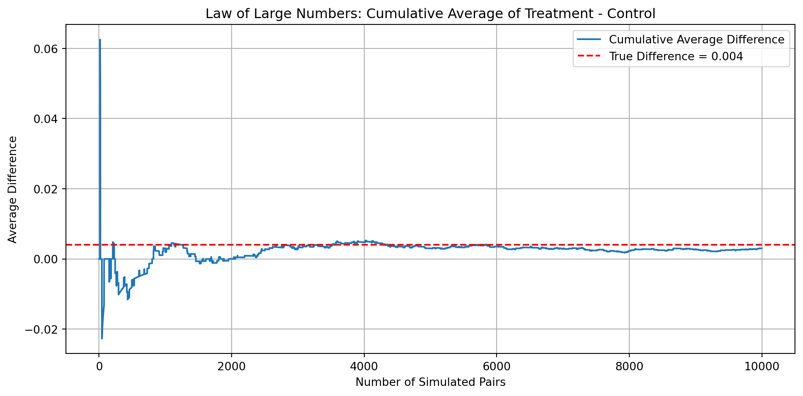

Dean Karlan at Yale and John List at the University of Chicago conducted a field experiment to test the effectiveness of different fundraising letters. They sent out 50,000 fundraising letters to potential donors, randomly assigning each letter to one of three treatments: a standard letter, a matching grant letter, or a challenge grant letter. They published the results of this experiment in the American Economic Review in 2007. The article and supporting data are available from the AEA website and from Innovations for Poverty Action as part of Harvard’s Dataverse.
This project seeks to replicate their results.
Data
Description
I begin by reading the dataset into Python and generating descriptive statistics to understand its structure.
import pandas as pdimport numpy as npimport matplotlib.pyplot as pltimport seaborn as snsimport pyrsm as rsmdf = pd.read_stata(r"karlan_list_2007.dta")df.describe()
treatment
control
ratio2
ratio3
size25
size50
size100
sizeno
askd1
askd2
...
redcty
bluecty
pwhite
pblack
page18_39
ave_hh_sz
median_hhincome
powner
psch_atlstba
pop_propurban
count
50083.000000
50083.000000
50083.000000
50083.000000
50083.000000
50083.000000
50083.000000
50083.000000
50083.000000
50083.000000
...
49978.000000
49978.000000
48217.000000
48047.000000
48217.000000
48221.000000
48209.000000
48214.000000
48215.000000
48217.000000
mean
0.666813
0.333187
0.222311
0.222211
0.166723
0.166623
0.166723
0.166743
0.222311
0.222291
...
0.510245
0.488715
0.819599
0.086710
0.321694
2.429012
54815.700533
0.669418
0.391661
0.871968
std
0.471357
0.471357
0.415803
0.415736
0.372732
0.372643
0.372732
0.372750
0.415803
0.415790
...
0.499900
0.499878
0.168561
0.135868
0.103039
0.378115
22027.316665
0.193405
0.186599
0.258654
min
0.000000
0.000000
0.000000
0.000000
0.000000
0.000000
0.000000
0.000000
0.000000
0.000000
...
0.000000
0.000000
0.009418
0.000000
0.000000
0.000000
5000.000000
0.000000
0.000000
0.000000
25%
0.000000
0.000000
0.000000
0.000000
0.000000
0.000000
0.000000
0.000000
0.000000
0.000000
...
0.000000
0.000000
0.755845
0.014729
0.258311
2.210000
39181.000000
0.560222
0.235647
0.884929
50%
1.000000
0.000000
0.000000
0.000000
0.000000
0.000000
0.000000
0.000000
0.000000
0.000000
...
1.000000
0.000000
0.872797
0.036554
0.305534
2.440000
50673.000000
0.712296
0.373744
1.000000
75%
1.000000
1.000000
0.000000
0.000000
0.000000
0.000000
0.000000
0.000000
0.000000
0.000000
...
1.000000
1.000000
0.938827
0.090882
0.369132
2.660000
66005.000000
0.816798
0.530036
1.000000
max
1.000000
1.000000
1.000000
1.000000
1.000000
1.000000
1.000000
1.000000
1.000000
1.000000
...
1.000000
1.000000
1.000000
0.989622
0.997544
5.270000
200001.000000
1.000000
1.000000
1.000000
8 rows × 48 columns
Variable Definitions
Variable
Description
treatment
Treatment
control
Control
ratio
Match ratio
ratio2
2:1 match ratio
ratio3
3:1 match ratio
size
Match threshold
size25
$25,000 match threshold
size50
$50,000 match threshold
size100
$100,000 match threshold
sizeno
Unstated match threshold
ask
Suggested donation amount
askd1
Suggested donation was highest previous contribution
askd2
Suggested donation was 1.25 x highest previous contribution
askd3
Suggested donation was 1.50 x highest previous contribution
ask1
Highest previous contribution (for suggestion)
ask2
1.25 x highest previous contribution (for suggestion)
ask3
1.50 x highest previous contribution (for suggestion)
amount
Dollars given
gave
Gave anything
amountchange
Change in amount given
hpa
Highest previous contribution
ltmedmra
Small prior donor: last gift was less than median $35
freq
Number of prior donations
years
Number of years since initial donation
year5
At least 5 years since initial donation
mrm2
Number of months since last donation
dormant
Already donated in 2005
female
Female
couple
Couple
state50one
State tag: 1 for one observation of each of 50 states; 0 otherwise
nonlit
Nonlitigation
cases
Court cases from state in 2004-5 in which organization was involved
statecnt
Percent of sample from state
stateresponse
Proportion of sample from the state who gave
stateresponset
Proportion of treated sample from the state who gave
stateresponsec
Proportion of control sample from the state who gave
stateresponsetminc
stateresponset - stateresponsec
perbush
State vote share for Bush
close25
State vote share for Bush between 47.5% and 52.5%
red0
Red state
blue0
Blue state
redcty
Red county
bluecty
Blue county
pwhite
Proportion white within zip code
pblack
Proportion black within zip code
page18_39
Proportion age 18-39 within zip code
ave_hh_sz
Average household size within zip code
median_hhincome
Median household income within zip code
powner
Proportion house owner within zip code
psch_atlstba
Proportion who finished college within zip code
pop_propurban
Proportion of population urban within zip code
Balance Test
As an ad hoc test of the randomization mechanism, I provide a series of tests that compare aspects of the treatment and control groups to assess whether they are statistically significantly different from one another.
I test whether the treatment and control groups differ on pre-treatment variables like mrm2 (months since last donation) using both a t-test and a linear regression. Both methods give the same result: no significant difference. This confirms that the groups are balanced, as also shown in Table 1 of the paper.
Mean Treatment: 13.012
Std Treatment: 12.086
Mean Control: 12.998
Std Control: 12.074
Overall Mean: 13.007
Overall Std: 12.081
t test: 0.1195315522817725
model = rsm.model.regress(data = df, rvar ='mrm2', evar ='treatment')model.summary()
Linear regression (OLS)
Data : Not provided
Response variable : mrm2
Explanatory variables: treatment
Null hyp.: the effect of x on mrm2 is zero
Alt. hyp.: the effect of x on mrm2 is not zero
coefficient std.error t.value p.value
Intercept 12.998 0.094 138.979 < .001 ***
treatment 0.014 0.115 0.119 0.905
Signif. codes: 0 '***' 0.001 '**' 0.01 '*' 0.05 '.' 0.1 ' ' 1
R-squared: 0.0, Adjusted R-squared: -0.0
F-statistic: 0.014 df(1, 50080), p.value 0.905
Nr obs: 50,082 (1 obs. dropped)
The manual t-test and linear regression results for mrm2 (months since last donation) show no statistically significant difference between the treatment and control groups (t ≈ 0.12, p ≈ 0.905), indicating that this key pre-treatment variable is well balanced. This supports the validity of the random assignment and confirms that the experimental groups are comparable before the intervention. Table 1 is included in the paper to show that randomization produced balanced groups across a wide range of covariates, ensuring that any observed differences in outcomes can be attributed to the treatment rather than pre-existing differences.
Mean Treatment: 59.597
Std Treatment: 73.052
Mean Control: 58.96
Std Control: 67.269
Overall Mean: 59.385
Overall Std: 71.177
t test: 0.9704273516144837
model = rsm.model.regress(data = df, rvar ='hpa', evar ='treatment')model.summary()
Linear regression (OLS)
Data : Not provided
Response variable : hpa
Explanatory variables: treatment
Null hyp.: the effect of x on hpa is zero
Alt. hyp.: the effect of x on hpa is not zero
coefficient std.error t.value p.value
Intercept 58.960 0.551 107.005 < .001 ***
treatment 0.637 0.675 0.944 0.345
Signif. codes: 0 '***' 0.001 '**' 0.01 '*' 0.05 '.' 0.1 ' ' 1
R-squared: 0.0, Adjusted R-squared: -0.0
F-statistic: 0.891 df(1, 50081), p.value 0.345
Nr obs: 50,083
The hpa variable is a pre-treatment covariate, so the lack of a significant difference across groups provides evidence that random assignment was successful. In particular, it suggests that prior donation behavior (as measured by the highest past contribution) was balanced across the treatment and control conditions. This supports the validity of any causal claims made later in the experiment, as we can reasonably assume that any post-treatment differences in donation behavior are due to the treatment itself rather than pre-existing differences in donor generosity.
Mean Treatment: 8.035
Std Treatment: 11.39
Mean Control: 8.047
Std Control: 11.404
Overall Mean: 8.039
Overall Std: 11.394
t test: -0.11084502380904246
model = rsm.model.regress(data = df, rvar ='freq', evar ='treatment')model.summary()
Linear regression (OLS)
Data : Not provided
Response variable : freq
Explanatory variables: treatment
Null hyp.: the effect of x on freq is zero
Alt. hyp.: the effect of x on freq is not zero
coefficient std.error t.value p.value
Intercept 8.047 0.088 91.231 < .001 ***
treatment -0.012 0.108 -0.111 0.912
Signif. codes: 0 '***' 0.001 '**' 0.01 '*' 0.05 '.' 0.1 ' ' 1
R-squared: 0.0, Adjusted R-squared: -0.0
F-statistic: 0.012 df(1, 50081), p.value 0.912
Nr obs: 50,083
The variable freq, representing the number of prior donations, shows nearly identical means between the treatment and control groups. Both the manual t-test and regression confirm that this difference is not statistically significant. This suggests that random assignment successfully balanced this pre-treatment characteristic, which supports the internal validity of the experimental design. Because the treatment and control groups are statistically equivalent in terms of donation frequency history, we can be more confident that any observed post-treatment effects on donation behavior are attributable to the treatment rather than pre-existing differences in donor activity.
Experimental Results
Charitable Contribution Made
First, I analyze whether matched donations lead to an increased response rate of making a donation.
I create a barplot showing the proportion of people who donated in each group. One bar represents the treatment group and the other represents the control group, allowing for a visual comparison of donation rates.
prop_donated = df.groupby('treatment')['gave'].mean().reset_index()prop_donated['group'] = prop_donated['treatment'].map({0: 'Control', 1: 'Treatment'})sns.barplot(data=prop_donated, x='group', y='gave')plt.ylabel("Proportion Who Donated")plt.title("Donation Rate by Group")plt.show()
I run a t-test and a linear regression to compare donation rates between treatment and control. Both show that the treatment group is more likely to donate. This suggests that people respond to matching offers by being more willing to give.
model = rsm.model.regress(data = df, rvar ='gave', evar ='treatment')model.summary()
Linear regression (OLS)
Data : Not provided
Response variable : gave
Explanatory variables: treatment
Null hyp.: the effect of x on gave is zero
Alt. hyp.: the effect of x on gave is not zero
coefficient std.error t.value p.value
Intercept 0.018 0.001 16.225 < .001 ***
treatment 0.004 0.001 3.101 0.002 **
Signif. codes: 0 '***' 0.001 '**' 0.01 '*' 0.05 '.' 0.1 ' ' 1
R-squared: 0.0, Adjusted R-squared: 0.0
F-statistic: 9.618 df(1, 50081), p.value 0.002
Nr obs: 50,083
The statistical analysis shows that individuals who received the treatment — a matching donation offer — were significantly more likely to make a charitable contribution compared to those who received the control letter. Both the t-test and linear regression indicate that this difference is unlikely to be due to chance. This suggests that the presence of a matching grant acts as a powerful motivator, nudging people toward taking action. In the context of human behavior, this reveals that even a subtle change in framing — like knowing one’s gift will be matched — can meaningfully increase the likelihood of giving. It highlights how social cues or perceived amplification of impact can influence decision-making in charitable contexts.
I run a probit regression of donation on treatment assignment. The results replicate Table 3, column 1 in the paper, showing a positive and significant effect of treatment on the likelihood of donating.
Next, I assess the effectiveness of different sizes of matched donations on the response rate.
I run t-tests comparing donation rates between different match ratios (1:1, 2:1, 3:1). The results show no significant differences, suggesting that larger match ratios do not increase donation likelihood. This supports the authors’ comment that higher match rates don’t have additional impact beyond offering a match.
# t-test between 2:1 and 1:1 ratiosgave_1_1 = df[df['ratio'] ==1]['gave']gave_2_1 = df[df['ratio'] ==2]['gave']from scipy.stats import ttest_indt_stat, p_val = ttest_ind(gave_2_1, gave_1_1, equal_var=False)print("2:1 vs 1:1 Match Rate:")print(f"T-stat: {t_stat:.3f}, P-value: {p_val:.3f}")
2:1 vs 1:1 Match Rate:
T-stat: 0.965, P-value: 0.335
# t-test between 3:1 and 1:1 ratiosgave_3_1 = df[df['ratio'] ==3]['gave']gave_1_1 = df[df['ratio'] ==1]['gave']t_stat, p_val = ttest_ind(gave_3_1, gave_1_1, equal_var=False)print("3:1 vs 1:1 Match Rate:")print(f"T-stat: {t_stat:.3f}, P-value: {p_val:.3f}")
3:1 vs 1:1 Match Rate:
T-stat: 1.015, P-value: 0.310
# t-test between 3:1 and 2:1 ratiosgave_3_1 = df[df['ratio'] ==3]['gave']gave_2_1 = df[df['ratio'] ==2]['gave']t_stat, p_val = ttest_ind(gave_3_1, gave_2_1, equal_var=False)print("3:1 vs 2:1 Match Rate:")print(f"T-stat: {t_stat:.3f}, P-value: {p_val:.3f}")
3:1 vs 2:1 Match Rate:
T-stat: 0.050, P-value: 0.960
My results clearly support the authors’ conclusion: while higher match ratios may show slightly higher donation rates numerically, those differences are not statistically significant, and therefore do not provide strong evidence that larger match sizes are more effective than 1:1 matches.
I run a regression of gave on the match ratio indicators. The coefficients are small, and only the 2:1 and 3:1 ratios are statistically significant, but the differences between them are minimal. This suggests that while offering a match matters, increasing the match size has little additional effect.
model = rsm.model.regress(data = df, rvar ='gave', evar ='ratio')model.summary()
Linear regression (OLS)
Data : Not provided
Response variable : gave
Explanatory variables: ratio
Null hyp.: the effect of x on gave is zero
Alt. hyp.: the effect of x on gave is not zero
coefficient std.error t.value p.value
Intercept 0.018 0.001 16.225 < .001 ***
ratio[1] 0.003 0.002 1.661 0.097 .
ratio[2] 0.005 0.002 2.744 0.006 **
ratio[3] 0.005 0.002 2.802 0.005 **
Signif. codes: 0 '***' 0.001 '**' 0.01 '*' 0.05 '.' 0.1 ' ' 1
R-squared: 0.0, Adjusted R-squared: 0.0
F-statistic: 3.665 df(3, 50079), p.value 0.012
Nr obs: 50,083
Regression results show that all three match ratios (1:1, 2:1, 3:1) are associated with slightly higher donation rates compared to the control group, but the differences are small. The coefficient for ratio[1] (1:1 match) is 0.003 and marginally significant (p = 0.097), while the coefficients for ratio[2] (2:1) and ratio[3] (3:1) are both 0.005 and statistically significant at the 1% level (p = 0.006 and p = 0.005). However, the differences between them are not large in magnitude — all are within 0.002 of each other — suggesting that although offering any match tends to increase donations, there is little evidence that larger match sizes lead to proportionally greater increases. This supports the conclusion that the presence of a match matters more than its generosity, and that people are generally responsive to the signal of support, not necessarily the size of the match.
I calculate the response rate differences both directly from the data and using regression coefficients. The difference between 1:1 and 2:1 is small, and there is no difference between 2:1 and 3:1. This suggests that increasing the match ratio does not meaningfully improve donation rates.
Both the raw response rates and regression coefficients indicate that increasing the match from 1:1 to 2:1 produces a small increase in the probability of donating (about 0.2 percentage points), while moving from 2:1 to 3:1 shows virtually no change. These differences are very modest in size, and the lack of improvement from 2:1 to 3:1 suggests diminishing returns to increasing match generosity. The findings reinforce the conclusion that offering any match increases donations, but offering a larger match ratio does not lead to proportionally greater giving. The signal of a match itself may be more powerful than the actual amount matched.
Size of Charitable Contribution
In this subsection, I analyze the effect of the size of matched donation on the size of the charitable contribution.
I run a t-test and a regression of donation amount on treatment. The treatment group gives slightly more on average, but the difference is only marginally significant. This suggests that the treatment mainly increases the number of donors, not the amount they give.
model = rsm.model.regress(data = df, rvar ='amount', evar ='treatment')model.summary()
Linear regression (OLS)
Data : Not provided
Response variable : amount
Explanatory variables: treatment
Null hyp.: the effect of x on amount is zero
Alt. hyp.: the effect of x on amount is not zero
coefficient std.error t.value p.value
Intercept 0.813 0.067 12.063 < .001 ***
treatment 0.154 0.083 1.861 0.063 .
Signif. codes: 0 '***' 0.001 '**' 0.01 '*' 0.05 '.' 0.1 ' ' 1
R-squared: 0.0, Adjusted R-squared: 0.0
F-statistic: 3.461 df(1, 50081), p.value 0.063
Nr obs: 50,083
From this analysis, we learn that individuals who received the matching grant treatment donated slightly more on average than those in the control group, but the difference is only marginally statistically significant (p = 0.063). The treatment effect estimate suggests that the treatment group gave about 15 cents more per person than the control group, which is a small increase. This result implies that the primary effect of the matching grant is likely driven by increasing the number of people who give, rather than substantially increasing the donation amounts of those who would already have donated. It highlights that while the match offer motivates more people to donate, it doesn’t strongly influence how much they give on average.
I repeat the regression using only those who donated. The treatment has no significant effect on the amount given among donors. This means the treatment influences whether people donate, but not how much they give once they do. Since the sample is restricted to donors, the treatment effect here does not have a causal interpretation.
model = rsm.model.regress(data = df[df['gave'] ==1], rvar ='amount', evar ='treatment')model.summary()
Linear regression (OLS)
Data : Not provided
Response variable : amount
Explanatory variables: treatment
Null hyp.: the effect of x on amount is zero
Alt. hyp.: the effect of x on amount is not zero
coefficient std.error t.value p.value
Intercept 45.540 2.423 18.792 < .001 ***
treatment -1.668 2.872 -0.581 0.561
Signif. codes: 0 '***' 0.001 '**' 0.01 '*' 0.05 '.' 0.1 ' ' 1
R-squared: 0.0, Adjusted R-squared: -0.001
F-statistic: 0.337 df(1, 1032), p.value 0.561
Nr obs: 1,034
The regression results show that among individuals who made a donation, the treatment group gave slightly less on average than the control group, but this difference (−1.67) is not statistically significant (p = 0.561). This tells us that the matching grant treatment did not affect the amount given by those who chose to donate. In other words, the presence of a match increased the number of people who gave, but not how much they gave once they decided to give.
As for causal interpretation: since this regression is limited only to people who donated, it suffers from selection bias — treatment may have influenced who donated, and the group of donors in treatment and control may differ in unobserved ways. Therefore, the treatment coefficient cannot be interpreted causally in this conditional regression. Only the earlier regression using the full sample (which preserves random assignment) supports a causal interpretation of treatment effects.
I create two histograms showing the distribution of donation amounts among donors, one for the treatment group and one for the control group. Each plot includes a red vertical line indicating the group’s average donation. The distributions and averages are similar, showing that donation amounts are not affected by the treatment.
As a reminder of how the t-statistic “works,” in this section I use simulation to demonstrate the Law of Large Numbers and the Central Limit Theorem.
Suppose the true distribution of respondents who do not get a charitable donation match is Bernoulli with probability p=0.018 that a donation is made.
Further suppose that the true distribution of respondents who do get a charitable donation match of any size is Bernoulli with probability p=0.022 that a donation is made.
Law of Large Numbers
I simulate 100,000 draws from the control group and 10,000 from the treatment group, then calculate a vector of 10,000 differences. I plot the cumulative average of these differences to visualize how it stabilizes over time. The plot shows that the cumulative average approaches the true difference in means, illustrating the Law of Large Numbers.
n =10000p_control =0.018p_treatment =0.022true_diff = p_treatment - p_control control = np.random.binomial(1, p_control, n)treatment = np.random.binomial(1, p_treatment, n)diffs = treatment - control cumulative_avg = np.cumsum(diffs) / np.arange(1, n +1)plt.figure(figsize=(10, 5))plt.plot(cumulative_avg, label='Cumulative Average Difference')plt.axhline(true_diff, color='red', linestyle='--', label='True Difference = 0.004')plt.title('Law of Large Numbers: Cumulative Average of Treatment - Control')plt.xlabel('Number of Simulated Pairs')plt.ylabel('Average Difference')plt.legend()plt.grid(True)plt.tight_layout()plt.show()

The cumulative average of the difference in donation outcomes between the treatment and control groups begins with high variability but quickly stabilizes as more simulated pairs are added. By around 1,000–2,000 iterations, the average difference converges very closely to the true population difference of 0.004, shown by the red dashed line. This confirms that as the sample size increases, the sample average becomes a reliable and consistent estimator of the population average. In other words, the plot clearly shows that the cumulative average approaches the true difference in means, which is exactly what the Law of Large Numbers predicts.
Central Limit Theorem
I simulate 1,000 average differences between treatment and control groups at sample sizes of 50, 200, 500, and 1000. For each sample size, I plot a histogram of the average differences. At smaller sample sizes, the distribution is wider and zero is near the center, but as the sample size increases, the distribution becomes tighter and more normal-shaped, and zero shifts into the tail. This demonstrates the Central Limit Theorem and how larger samples make it easier to detect true differences.
In the histogram for a sample size of 50, the distribution is wide and irregular, and zero appears near the center — indicating that at this small sample size, it’s still quite common to observe no difference between treatment and control groups due to random variation. As the sample size increases to 200 and 500, the distributions become more symmetric and bell-shaped, with zero gradually shifting away from the peak. By the time we reach a sample size of 1000, the distribution is tightly centered around a positive value, and zero clearly lies in the tail of the distribution. This shift demonstrates how larger samples improve our ability to detect even small differences and reduce the likelihood of falsely concluding that there’s no effect when one actually exists. In short, as sample size increases, zero moves from the middle toward the tails, confirming the predictions of the Central Limit Theorem and the increasing statistical power of larger samples.